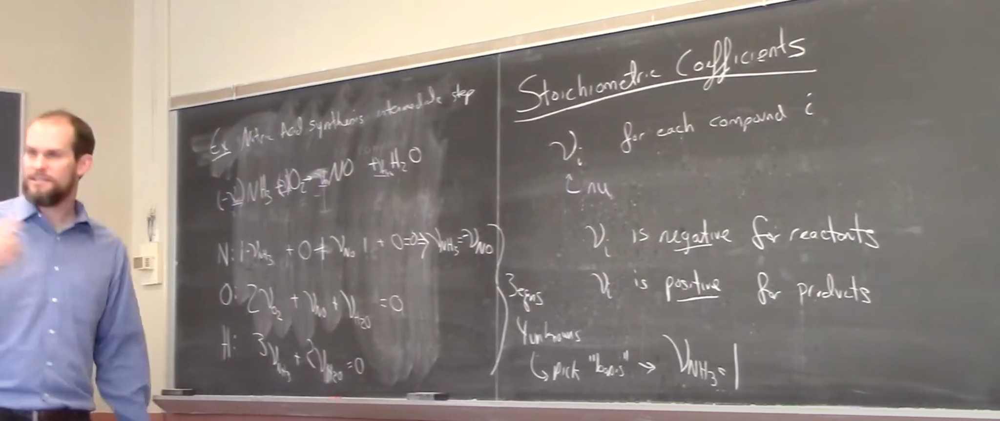

The purpose of this brief tutorial is to demonstrate the potential of ChatGPT as a multipurpose tool for content conversion.
This still image was captured from Prof. Jeff Gray's lecture "Reactions and Matrix Equations." I selected the frame from this video because it typifies lecture capture video from the time period. Using this image, I prompted ChatGPT to convert it into an accessible HTML file.
I uploaded the image of Prof. Gray's blackboard lesson to ChatGPT 4o, and used this prompt to generate the below output.
This section provides an audio narration of the content.
This content provides an overview of a chemical reaction used in the intermediate step of nitric acid synthesis. It includes the balanced chemical equation, the element-wise balance breakdown for nitrogen, oxygen, and hydrogen, and an explanation of the stoichiometric coefficient rules that guide how these equations are formed and solved. It is intended to provide both visual and spoken clarity for those studying chemical reactions.
N:
O:
H:
Reaction
The reaction shown is negative one times the stoichiometric coefficient of ammonia, NH₃, plus the stoichiometric coefficient of oxygen, O₂,
yields the stoichiometric coefficient of nitric oxide, NO, plus the stoichiometric coefficient of water, H₂O.
Element Balances
For the element balance on nitrogen: one times the stoichiometric coefficient of ammonia, plus zero,
plus the stoichiometric coefficient of nitric oxide, equals zero. This implies that
the stoichiometric coefficient of ammonia is equal to that of nitric oxide.
For the oxygen balance: two times the stoichiometric coefficient of oxygen, plus
the stoichiometric coefficient of nitric oxide, plus the stoichiometric coefficient of water, equals zero.
For the hydrogen balance: three times the stoichiometric coefficient of ammonia, plus
two times the stoichiometric coefficient of water, equals zero.
Stoichiometric Coefficient:
The stoichiometric coefficient
represents the amount associated with each compound i.
is negative for reactants (substances consumed) and positive for products (substances formed). There are three balance equations (one for each element) and four unknowns (the coefficients for NH₃, O₂, NO, and H₂O). To solve these, a common approach is to set a “basis” value, such as
.